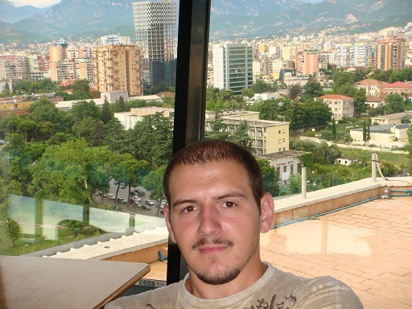
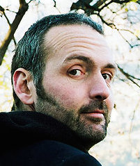
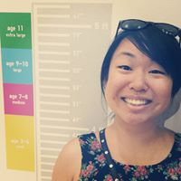
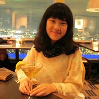
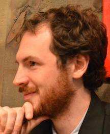
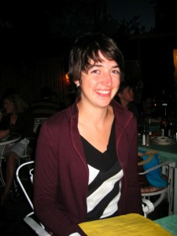

My research uses pattern-based fMRI analysis (also sometimes referred to as multi-voxel pattern analysis, or MVPA): applying methods from machine learning to study distributed multivoxel activation patterns in the brain. Although such methods have recently become popular for "decoding" neural signals, my own work aims to move beyond that, by seeking to uncover the structure of neural representations, and their relations to individual differences in behaviour. I am also very interested in relating these more theoretical questions to real-world problems, especially those of learning difficulties and educational disadvantage.
My CV can be downloaded here.
Please see the links above for additional information about my work. To get in touch, please feel free to send me an
e.mail.
Lab manager: Donias Doko

Donias is a recent graduate from the University of Rochester with a B.S. in neuroscience. He is interested in expanding his knowledge of research by gaining more experience in the field of cognitive science, before eventually applying to a graduate program, possibly for a MD/PhD. His interests have taken him from the cellular aspect of the brain by working in an Alzheimer's lab, to the conceptual aspect of the brain by working in a language processing lab, to now focusing on neural representation studies through fMRI analysis.
Donias's personal webpage, including his CV, is
here.
Postdocs
Andy Anderson

Andy joined the lab from working in Trento with Massimo Poesio and Marco Baroni. His interests are in the neural representation of the semantics of words and images. His Google Scholar profile is
here and his personal webpage is here.
Ben Zinszer
Ben joins us from having worked with Ping Li at Penn State. His interests are in semantic representations in bilingualism and statistical learning. His personal webpage is
here, and his Google Scholar profile is
here.
Graduate students
Carol Jew

Carol joined the BCS dept in Sept.2014, after having done her undergraduate degree in psychology at NYU and then working as the lab-manager for Mike Tarr. Her interests are in object categorisation and learning. Carol's personal homepage is here: www.caroljew.com
Elizabeth Shay
Elizabeth joined the BCS dept in Sept.2014, after having done two undergraduate degrees (linguistics and Computer Science) at U.Penn. Her interests are in semantic composition, semantic networks, and relations between music and language. Elizabeth's personal homepage is here.
Xixi Wang

Xixi joined the Biomedical Engineering dept in 2012. Her interests are in computer vision, machine learning, and their applications to fMRI analysis.
Claude Galette
Claude is a McNair Scholar senior-year undergraduate working in the lab. She is interested in applying to grad school to work on social and affective neuroscience. Claude's personal homepage is here.
Lab affiliates
Dave Kleinschmidt

Dave is a BCS graduate student. Aficionado of predictive coding, phonetic recalibration, and cycling. Bitbucket virtuoso. Home base in the lab of
Florian Jaeger. Dave's personal homepage is
here.
Lauren Emberson

Lauren is a BCS postdoc. Developmental cognitive neuroscientist. Expert in statistical learning, fMRI, and being Canadian. Home base in the lab of
Dick Aslin. Soon to be starting a tenure-track position at some place I've never heard of called "Princeton". Lauren's personal homepage is
here,
and her Princeton faculty webpage is here.